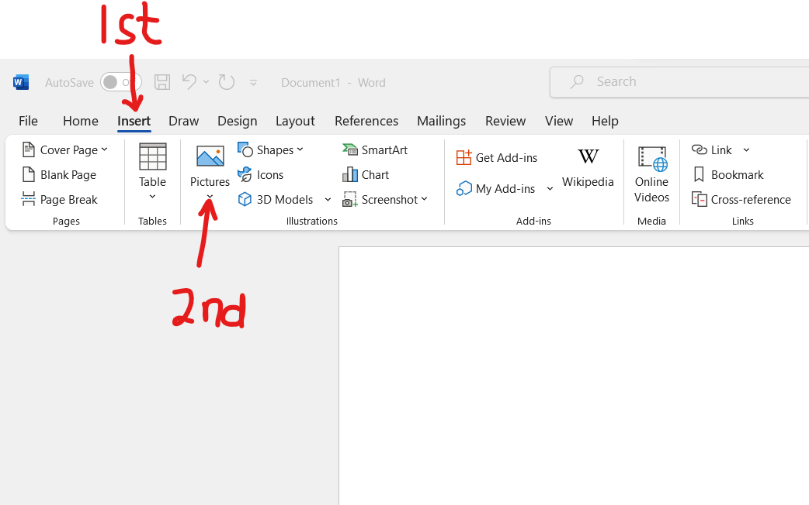

General Project Requirements
(1.) This is an individual project.
You may collaborate with one another. However, it is not a group project.
Students may work together. However, each student must submit own project.
No two students should use the same published book.
(2.) Find your favorite good published book or any good published book.
Also, please avoid controversial/opinionated/subjective books such as history books and the like.
Preferably, find a mathematics textbook/eText. This is because mathematics textbooks are
typically not controversial.
The published book must have:
(a.) ISBN-10
(b.) ISBN-13
(3.) The image of the part of the book that shows the ISBN-10 and the ISBN-13 must be included.
Please use the Insert → Pictures icon to insert the image directly.
The image should be very clear.

(4.) As a student, you have free access to Microsoft Office suite of apps.
(a.) Please download the desktop apps of Microsoft Office on your desktop/laptop (Windows and/or Mac only).
Do not use a chromebook.
Do not use a tablet/iPad.
Do not use a smartphone.
Do not use the web app/sharepoint access of Microsoft Office.
(Please contact the IT/Tech Support for assistance if you do not know how to download the desktop app.)
In that regard, the project is to be typed using the desktop version/app of Microsoft Office Word only.
(b.) The file name for the Microsoft Office Word project should be saved as: firstName–lastName–project
Use only hyphens between your first name and your last name; and between your last name and the word, project.
No spaces.
(c.) For all English terms/work: use Times New Roman; font size of 14; line spacing of 1.5.
Further, please make sure you have appropriate spacing between each heading and/or section as applicable.
Your work should be well-formatted and visually appealing.

(d.) For all Math terms/work: symbols, variables, numbers, formulas, expressions, equations and fractions among others, the Math Equation Editor is required.
(i.) The font is set to Cambria Math by default (set it to that font if it is not); font size of 14, and align accordingly (preferably left-aligned).
(ii.) To ensure appropriate spacing between your Math work, use a line spacing of 2.0.
Alternatively, you may use line spacing of 1.5 but insert a space after each equation as applicable.
Your work should be well-formatted, organized, well-spaced (not compact), and visually appealing.


(e.) Include page numbers. You may include at the top of the pages or at the bottom of the pages but not both.

(5.) All work must be shown.
If you use any variables, please define your variables accordingly.
Please ensure your answers matches the ISBN-10 and ISBN-13 on the book you used.
(6.) Please review the examples I did.
You may not do the same examples that I did.
These are the minimum expectations.
(7.) Mr. C (SamDom For Peace) wants you to do this real-world project very well.
Hence, he highly recommends that you submit a draft so he can give you feedback.
(a.) First: (Required): Please submit a clear image of the section of the book/resource that shows the ISBN-10 and ISBN-13 in the Projects: ISBNs page in the Canvas course.
The clear image should clearly show the ISBN-10 and ISBN-13 in the book.
I shall review and respond.
(b.) Second: (Highly Recommended): When your book/resource is approved, please submit your draft.
Draft projects are not graded because they are drafts. They are only for feedback.
If your professor gives you an opportunity to submit a draft, please use that opportunity.
Submitting drafts is highly recommended. Submitting drafts is not required.
It is highly recommended because I want to give you the opportunity to do your project very well and make an excellent grade in it.
Please turn in your draft in the Discussions page → Projects: Drafts forum in the Canvas course (if you would like your colleagues to read my comments and avoid any mistakes that you made).
You may also send it to me via email (if you do not want your colleagues to see my comments and learn from the comments).
I shall review and provide feedback.
Then, review my feedback and make changes as necessary.
Keep working with me until I give you the green light to turn in your actual project. This must be done before the final due date to turn in the actual project.
When everything is fine (after you make changes as applicable based on my feedback), please submit your work in the appropriate area: Assignments page → ISBNs Project in the Canvas course.
Only the projects submitted in the appropriate place in the Canvas course are graded.
(8.) All work must be turned in by the final due date to receive credit.
Please note the due dates listed in the course syllabus for the submission of the draft and the actual project. In the course syllabus, we have the:
(a.) Initial due date for the Project Draft: Please turn in your draft.
(b.) Initial due date for the Project: If your draft is not ready for submission, keep working with me. Make changes based on my feedback and keep working with me.
If you prefer not to turn in a draft, please review all the resources provided for you and do your project well and submit.
(c.) Final due date for the Project Draft: This is necessary if you want a written feedback for your draft.
After this date, written feedback would not be provided for your draft. However, verbal feedback would still be provided during Office Hours/Student Engagement Hours/Live Sessions.
(d.) Final due date for the Project: All work must be turned in by this date to receive credit.
After this date, no work may be accepted.